Calm Digital Spaces
I like making websites that feel readable, gentle, and easier to start with.
Google Translate loads only after you allow optional external services.

Software Development student • Eindhoven • Web + Game development
Welcome to my portfolio website — my name is Julie Janssen. I'm 20 years old and I study software development at SintLucas in Eindhoven.
I enjoy writing stories, socializing, and listening to music. I want to become an autism specialist, and I’m also interested in web development.
I’m the owner and creator of JourHelp, a website where I share calm, personal information about OCD and autism.
I’ve always experienced the world a little differently. After professional assessment, I was diagnosed with an unspecified neurodevelopmental condition.
Many of my traits closely align with autism. While I do not hold a formal autism diagnosis due to strict diagnostic criteria around early childhood documentation, I deeply relate to autistic experiences.
Not everyone who relates to autism has a formal diagnosis, and that doesn’t make their experience any less real.
This perspective plays an important role in how I understand and support others, and is reflected in the work I create through JourHelp.
I’m willing to learn and try new things, I respect others, and I enjoy working in a team.
JourHelp is my website for calm, personal information about OCD, autism, and neurodevelopmental experiences. I created it because, for a long time, I did not feel like my neurodivergent experience was understood. I often felt different, like I did not fully belong. Learning about autism changed my life, and I wanted to create something that could help at least one person feel less alone. I base my work on both personal experience and ongoing research into psychology and neurodivergence.
I like making websites that feel readable, gentle, and easier to start with.
I enjoy building interactive projects with HTML, CSS, JavaScript, Unity, and C#.
I care about autism, OCD, mental health, accessibility, and clear explanations.
I began learning how websites, games, and interactive projects are made.
I practiced HTML, CSS, JavaScript, C#, Unity, Blender, and GitHub workflow.
I started building a calm platform around OCD, autism, and personal support.
I want to keep learning web development and become an autism specialist.
These are the outside-of-school projects I’m most proud of:
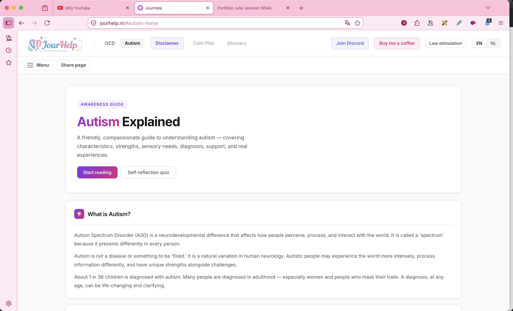
Awareness guides about OCD and autism with calm explanations, accessible sections, and supportive information.
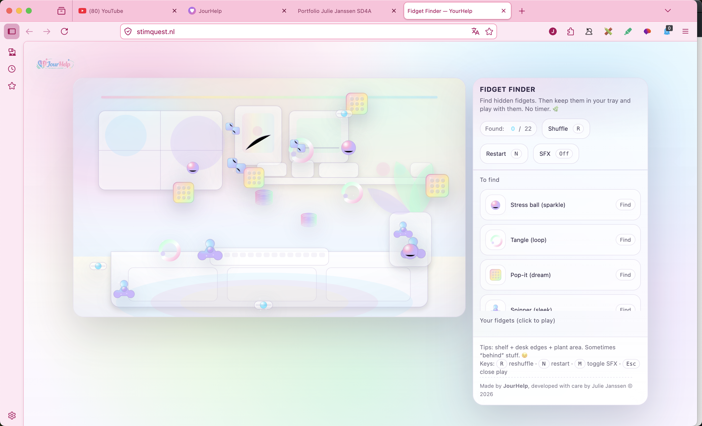
Fidget Finder is a soft interactive webgame where users find hidden fidgets and keep them in a tray.
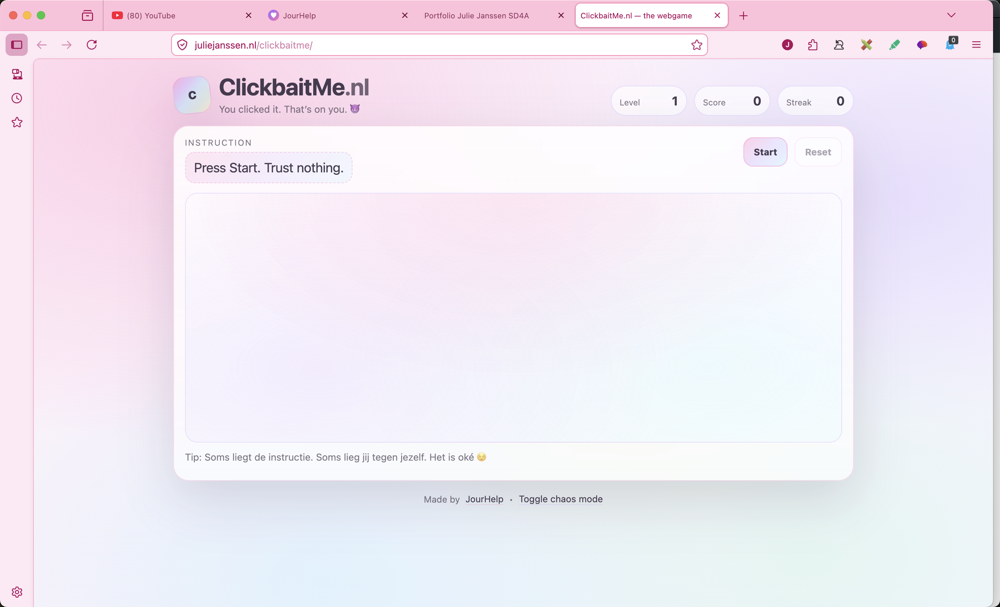
A playful webgame about misleading instructions, quick reactions, levels, score, and a little chaos.
No projects found for that search.
I’m happy to talk about my process, what I learned, or how I built them.
Browse all projects by type and open the ones you want to read more about.
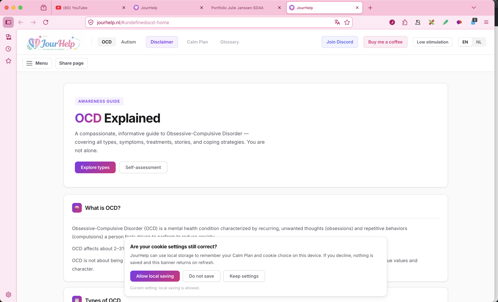
The JourHelp guides are part of JourHelp, my own website about OCD and autism. I made these pages to explain both topics in a calm, compassionate, and informative way. The OCD guide includes information about what OCD is, different types, symptoms, treatment, personal stories, and coping strategies. The autism guide focuses on understanding autism, characteristics, strengths, sensory needs, diagnosis, support, and real experiences. The goal is to make both subjects feel easier to start reading, especially for people who may already feel overwhelmed or misunderstood.
Live website · Outside of school · Personal project
This is an outside of school project and part of my own JourHelp work.
I created JourHelp and built the guides to present OCD and autism information in a calm way.
The hardest part was doing research and turning information into clear, readable content.
I learned more about autism, OCD information, and coding a supportive website experience.
StimQuest is a gentle fidget-finding webgame. The player searches a soft, pastel scene for hidden fidgets and collects them in a tray. I focused on creating a low-pressure interaction with no timer, simple controls, and a calm visual style. This project helped me practice playful web interaction while still keeping the experience relaxed and sensory-friendly.
Live website · Outside of school · Personal project
This is an outside of school project.
I created StimQuest and built the fidget finder idea into a soft interactive webgame.
The hardest part was coming up with the idea and shaping it into a clear interaction.
I learned more about coding an interactive web project.
ClickbaitMe is a webgame built around misleading instructions and playful chaos. The player has to react to instructions, but the game is not always honest about what it wants. I worked on the interface, score, levels, streak system, and the overall joke of the experience. It was a fun way to practice JavaScript logic, feedback, and making a small browser game feel complete.
Live website · Outside of school · Personal project
This is an outside of school project.
I created ClickbaitMe and built the playful webgame concept around misleading instructions.
The hardest part was developing the idea and making the concept feel fun.
I learned more about coding a browser game with interaction and feedback.
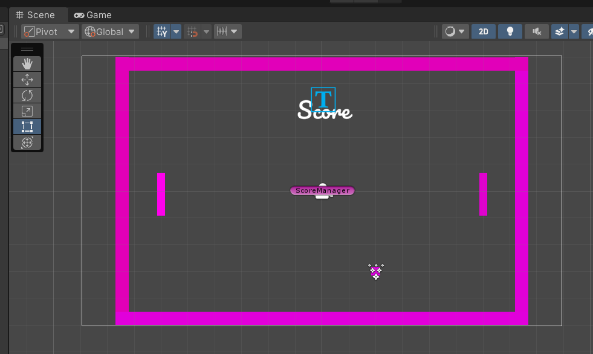
For this project I made a Pong game using Unity and C# scripts. The goal was to get more familiar with Unity, simple game rules, and how objects interact with each other in a scene. I learned how to set up objects, create movement, work with collisions, switch scenes, and add a particle effect. This project helped me understand how small scripts can work together to create a complete game loop.
I built a Pong game with movement, objects, scoring flow, scene switching, and effects.
The hardest parts were collisions, switching scenes, and adding particle effects.
I learned how to set up objects, create movement, work with collisions, switch scenes, and add a particle effect.
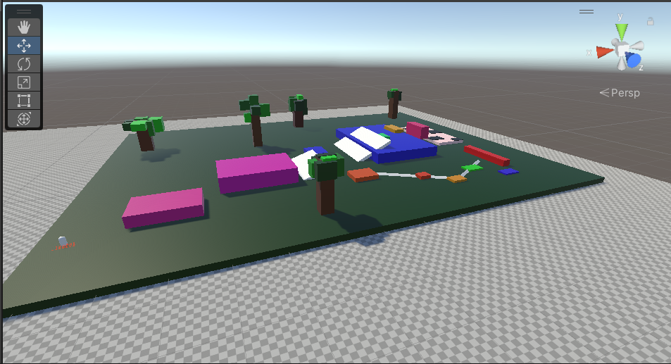
In this project I started learning 3D modeling in Blender and then used my work inside Unity. I practiced making shapes, adding colors, using Blender tools, and thinking about how a model should fit into a game environment. I also learned about collision setup and importing Blender files into Unity, which helped me understand the connection between asset creation and game development.
I built a 3D obstacle course and worked with Blender models inside Unity.
The hardest parts were modelling the objects and setting up collisions correctly.
I learned more about 3D modelling, importing assets, and collision setup.
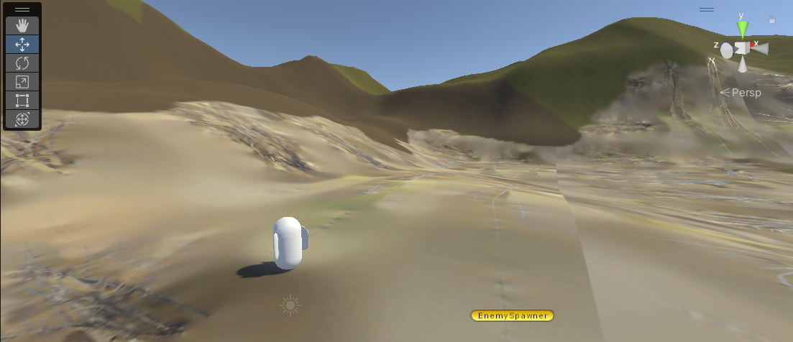
This project taught me more about first-person movement and building a playable 3D environment. I worked on spawning enemies, creating and customizing terrain, and writing C# scripts for player speed and camera movement. I also learned how terrain height, collisions, and object placement affect the way a player moves through a level.
I built a first person shooter with player movement, enemies, terrain, and hitboxes.
The hardest parts were spawning enemies and getting the hitboxes to work properly.
I learned more about spawning enemies and working with hitboxes in Unity.
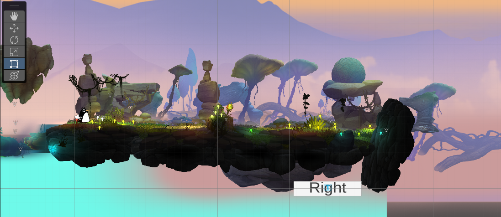
I attempted to make an Android mobile game and used it as a way to learn more about mobile controls. I experimented with assets, C# scripts, UI buttons, and how a game should respond on a smaller screen. The project became difficult because of camera issues, but that made it useful practice for troubleshooting, testing different solutions, and understanding how assets behave in Unity.
I built an attempted mobile adventure game and experimented with mobile controls and UI.
The project became difficult because of camera issues.
I learned more about debugging, testing, and trying different solutions in Unity.
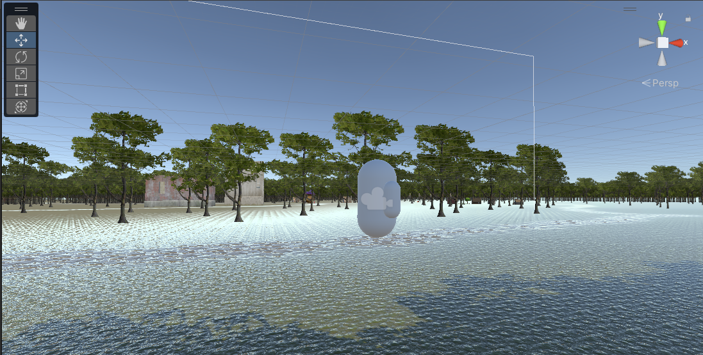
Mindful Wandering is a peaceful exploration game built in Unity with C#. I wanted the project to feel calmer than a typical action game, so the focus was on moving through the environment and creating a relaxed experience. The biggest challenge was getting the player and camera movement to feel right, which taught me how important controls are for the mood of a game.
I built a calming 3D walking game focused on relaxed exploration.
The hardest part was making the player and camera movement feel right.
I learned more about player movement and camera movement in Unity.
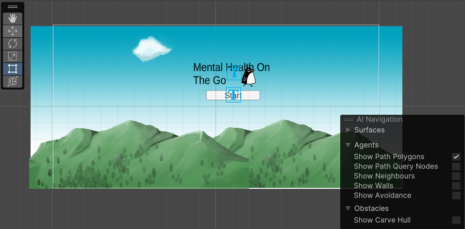
Mental Health On The Go is an app concept that provides information and tips about mental struggles. I built it with C# and focused on making the content feel supportive and easy to access. I faced challenges with screen sizes, text sizes, and scene switching, but the project helped me learn how to research problems, test ideas, and trust the process when something does not work immediately.
I built a mobile game concept about mental health and supportive information.
The hardest parts were screen sizes, text sizes, and scene switching.
I learned more about screen sizes, text sizes, and scene switching in Unity.
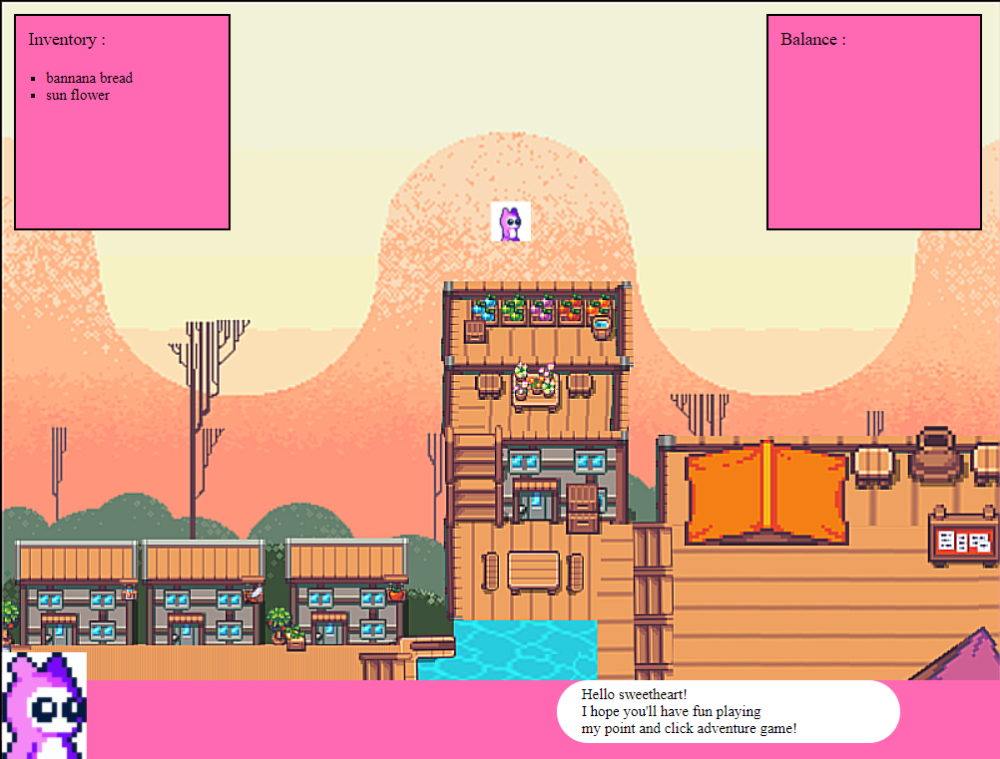
PointAndClick was my introduction to working with GitHub and pushing updates to a project. I built it with HTML, CSS, and JavaScript, and created clickable surfaces that trigger dialogue. The tile map was made with Photoshop, so this project combined design work with interactive code. It helped me understand how planning, visual assets, and JavaScript can come together in one web experience.
I built a point and click adventure game with clickable elements and behavior.
The hardest part was targeting elements and making the right behavior happen after clicking.
I learned more about building point and click interaction with HTML, CSS, and JavaScript.
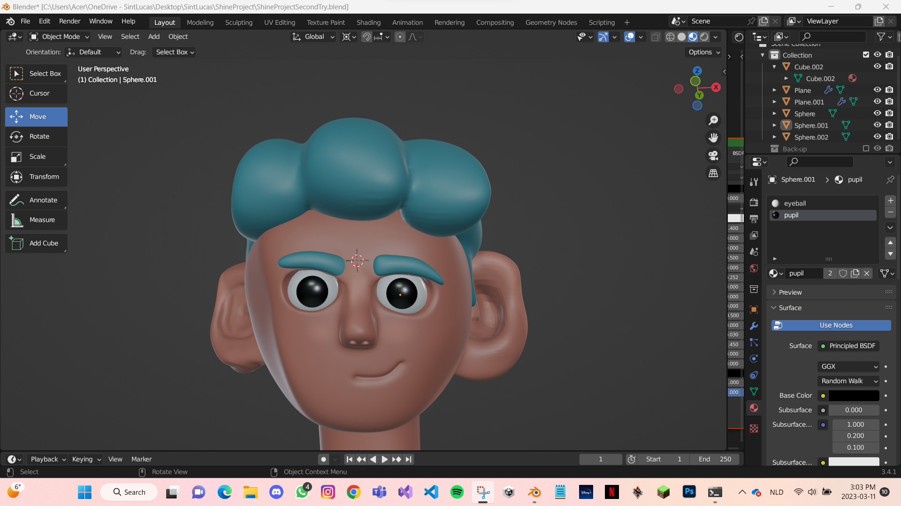
I made this character in Blender during the Ambition project. It was challenging because I was still learning the tools, but it helped me practice following tutorials, experimenting on my own, and staying patient when a model did not look right immediately. This project made me more comfortable with exploring new software and learning through trial and error.
I built a character model in Blender.
The hardest part was learning Blender and understanding the tools.
I learned Blender basics and became more comfortable exploring 3D software.
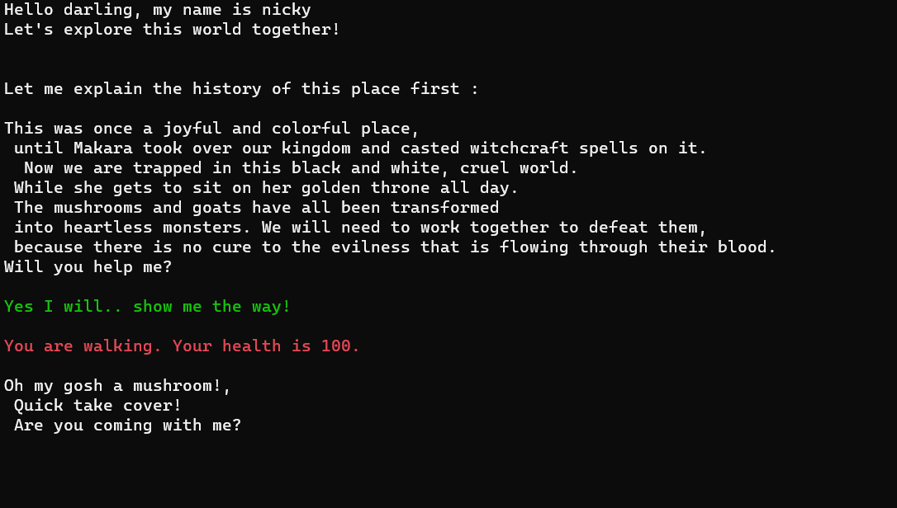
This is a text-based game in C# where users choose actions and the story changes based on their input. I practiced writing conditions, planning different paths, and making sure each choice leads to a clear result. The project helped me understand how logic can be used to create interaction, even without images or complex graphics.
I built a text-based interactive story game with choices and different endings.
The hardest part was making up the endings and choices.
I learned how to code different endings and choices with C# logic.
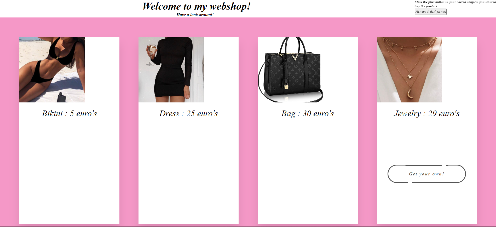
For the webshop project I worked on building a clear online shop layout. I practiced structuring pages, presenting products, and thinking about how users move through a shopping experience. This project helped me improve my HTML and CSS skills and made me think more about spacing, readable content, and simple navigation.
I built a webshop layout with products and shopping-style interaction.
The hardest part was the JavaScript aspect of the project.
I learned more about changing product amounts and making webshop interactions work.
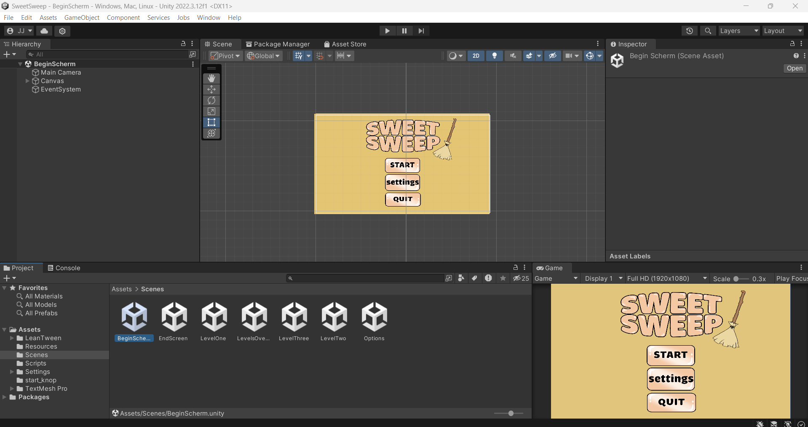
SweetSweep was created for Project Play. I focused on making something playful, colorful, and easy to understand. This project helped me think about how a small game idea can become more interesting through visual style, clear feedback, and simple interaction.
I built a matching and cleaning game together with DDM students and other software development students.
The hardest part was working together in Unity as a group.
I learned more about collaborative Unity projects and working with students from different roles.
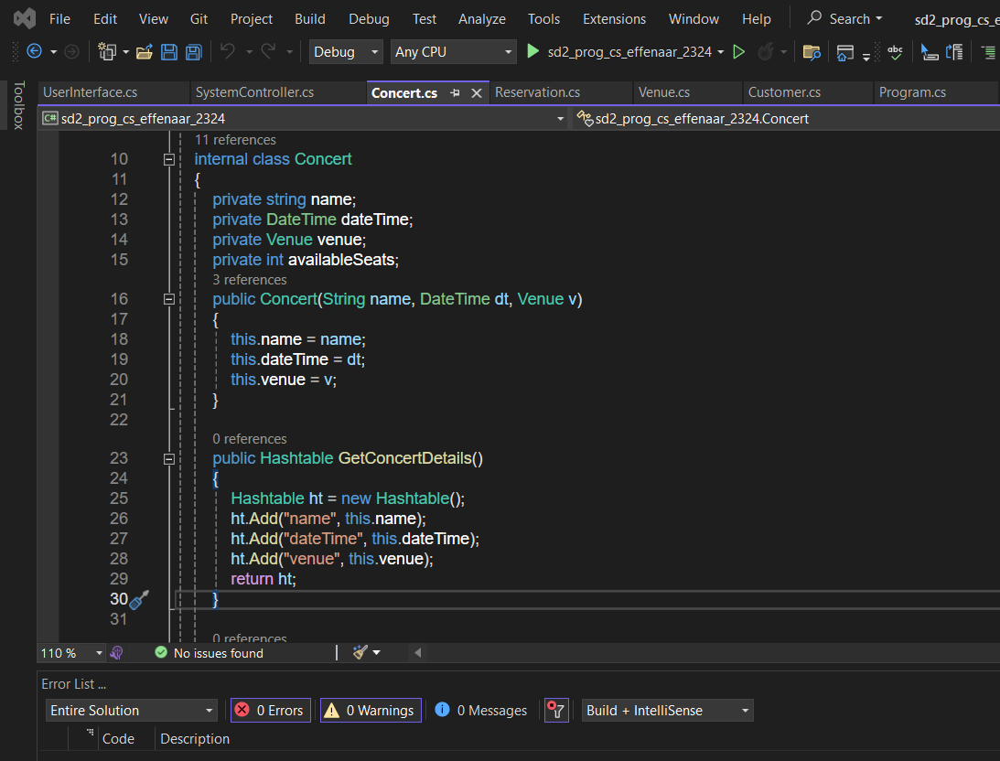
This was an assignment based on Effenaar. I worked on translating an existing style and subject into a digital layout. The project helped me practice visual structure, matching a theme, and making a page that feels connected to the brand or location it represents.
I built an app or digital project based on Effenaar.
The hardest part was working with the API.
I learned more about using an API inside a project.
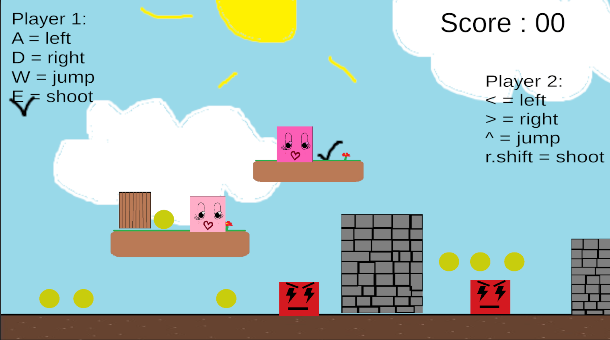
CubeWorld is a game project with a blocky world style. I used it to practice building a simple game environment and thinking about how the player moves through space. It helped me learn more about level layout, object placement, and how visual style can make a game feel more recognizable.
I built a cube platformer game in Unity.
The hardest part was working with hitboxes.
I learned more about Unity and C# while building a platformer.
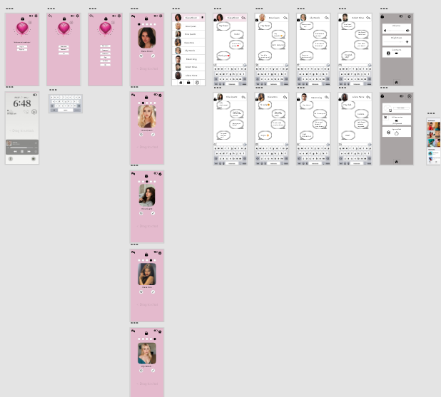
LoveSwipe is a prototype based around swipe-style interaction. I explored how a simple input idea can guide the whole design of an app or game. This project helped me think about user choices, quick feedback, and making an interface feel easy to understand from the first moment.
I built a dating app design with a swipe-style concept.
The hardest part was getting the aesthetic right.
I learned more about designing in Adobe XD.
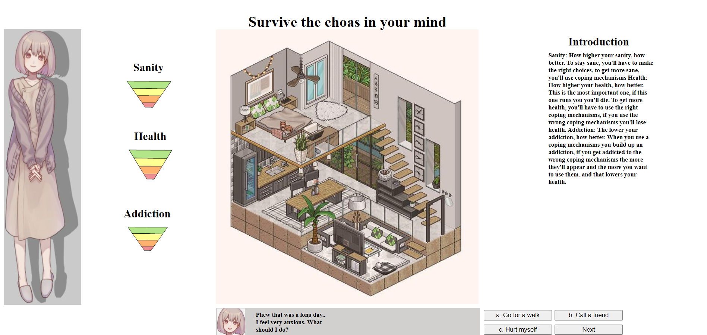
MentalHealthWeek is a project about mental health awareness and supportive design. I focused on creating something that feels calm, readable, and useful instead of overwhelming. This project connects with my interest in helping people and made me think more carefully about tone, accessibility, and the way information can affect how someone feels.
I built a game about mental health struggles with life-sim style scenarios.
The hardest part was creating the many scenarios, endings, and loops for the life sim.
I learned more about coding branching logic and scenarios with JavaScript.
You're welcome to contact me on the platforms below:
Email: juliejanssenwerk@icloud.com
Facebook: Julie Janssen